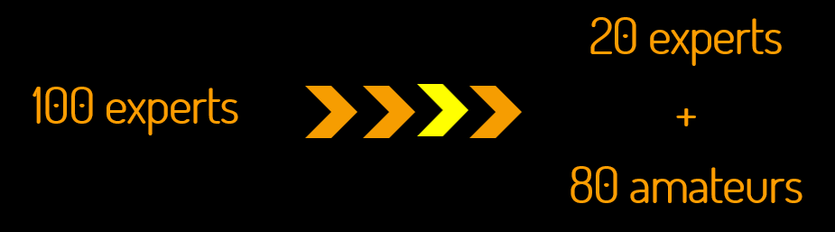

digitize Geospatial in తెలుగు, हिन्दी, ಕನ್ನಡ, தமிழ், മലയാളം, বাংলা, मराठी, 日本語
designed for undergraduates; amateurs can digitize with less than 2 hours of training
lidar.lionn® is a geospatial software with a minimalistic interface;
it is apt for digitization / production grade workforce.
> remote supervisor dashboard
> remote supervisor dashboard
> available in 6 Indic languages, English and Japanese
simplify your team
Giving jobs to undergraduates studied at local medium schools
“computer literacy is not important. Only common sense is expected!. We only gather team members when we sign contract with our customers in Sweden.”
– Bipin Kumar, GM GIS operations, Mega Technologies, Bengaluru
FAQ
Q1
Answers will always follow...
is a minimalistic software surprisingly simple for your team.
know@lidar.lionn.com +91 81378 50656
“simplicity is the ultimate sophistication”
Lionardo di ser Piero da Vinci
( 1452 – 1519 )